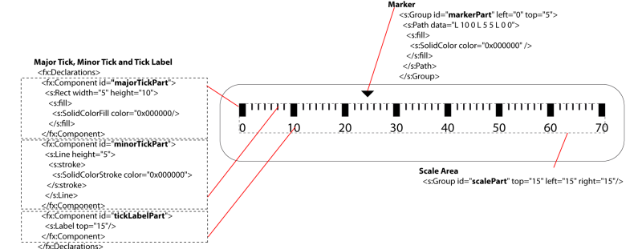

Assigning skin parts to gauge elements
Each GaugeElementBase has
a partId property which is used to define
the skinning contract between the
gauge and its skin class. At runtime, the GaugeBase class will associate each element with its visual part in the skin.
For example, the predefined HLinearGauge has a scale (RectangularLinearScale)
and a marker (RectangularGaugeMarker) in
the elements Vector. The scale partId property
is set to “scalePart” and
the marker partId property is set to “markerPart”. The skin class HorizontalGaugeSkin.mxml (which is the default skin class for HLinearGauge) includes an <s:group> with an id
set to markerPart.
Gauge elements can have more than one skin part. For
example, a scale has a majorTickPartId property
to define the appearance of the major ticks.
About gauge skins
The following figure shows basic principles for defining
skin parts of a horizontal scale and its marker.

For horizontal gauges, the baseline for ticks is the
upper side of the scale area. To change tick alignment of horizontal
and circular scales, you can set the top or y property of the tick
factory (left and x property for vertical gauges). Note that tick
labels can be drawn outside of the scale area, adjust padding consequently.
About circular gauges skins
Skins for circular gauges usually use resizeMode set to “scale”. This allows writing the skin at a
fixed size without managing how it will scale
Circular gauge skins contain visual objects that are
specific to them. These specific visual elements are inherited from CircularGaugeSkinElement, which defines common polar
coordinates attributes: originX, originY, startAngle,
endAngle, radius and orientation.
Circular scales are defined by CircularScaleGroup instances, Circular tracks are rendered by DonutSlice instances.
The CircularGaugeMarker is
responsible for rendering a value, typically a needle
If the skin part for a marker is a DonutSlice, you just have to synchronize the CircularScaleGroup with the DonutSlice by setting the same originX, originY and radius.
In other cases, you have to define the rotation origin
of a needle by setting the transformX and transformY properties in its skin part. This allows
the framework to place the needle by superimposing the rotation origin
and the point defined by originX, originY on the scale part (a CircularScaleGroup). Finally, the rotation of the needle skin part is set to reflect
the actual value of the marker.
Defining a custom gauge in MXML
The predefined gauges are defined in Action Script. However
it’s also possible to define a custom gauge in MXML, directly
in an application, or in an MXML component for reusability.
The following example shows a circular gauge compatible
with the default predefined skin
<?xml version="1.0" encoding="utf-8"?>
<s:Application xmlns:fx="http://ns.adobe.com/mxml/2009"
xmlns:s="library://ns.adobe.com/flex/spark"
xmlns:mx="library://ns.adobe.com/flex/halo" minWidth="1024" minHeight="768" xmlns:ibm="http://www.ibm.com/xmlns/prod/ilog/elixir/2010">
<fx:Script>
<![CDATA[
import com.ibm.ilog.elixir.gauges.skins.spark.CircularGaugeSkin;
]]>
</fx:Script>
<ibm:GaugeBase width="100%" height="100%"
skinClass="com.ibm.ilog.elixir.gauges.skins.spark.CircularGaugeSkin">
<ibm:CircularLinearScale minimum="-100" maximum="100"
majorTickInterval="50"
minorTickInterval="5" snapInterval="5"/>
<ibm:CircularGaugeMarker editable="true" animationDuration="1000"/>
<ibm:CircularGaugeTrack start="0" end="100"/>
</ibm:GaugeBase>
</s:Application>